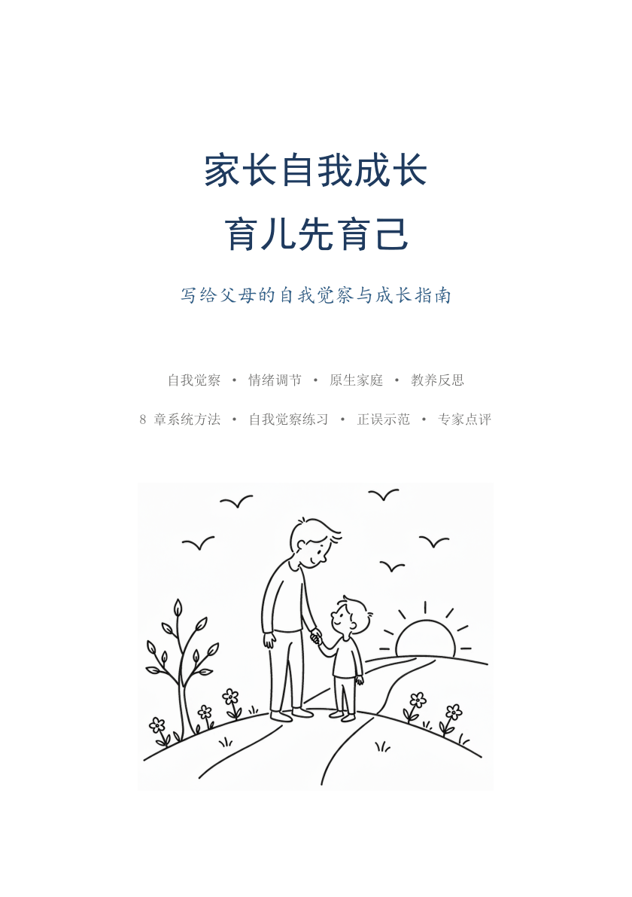
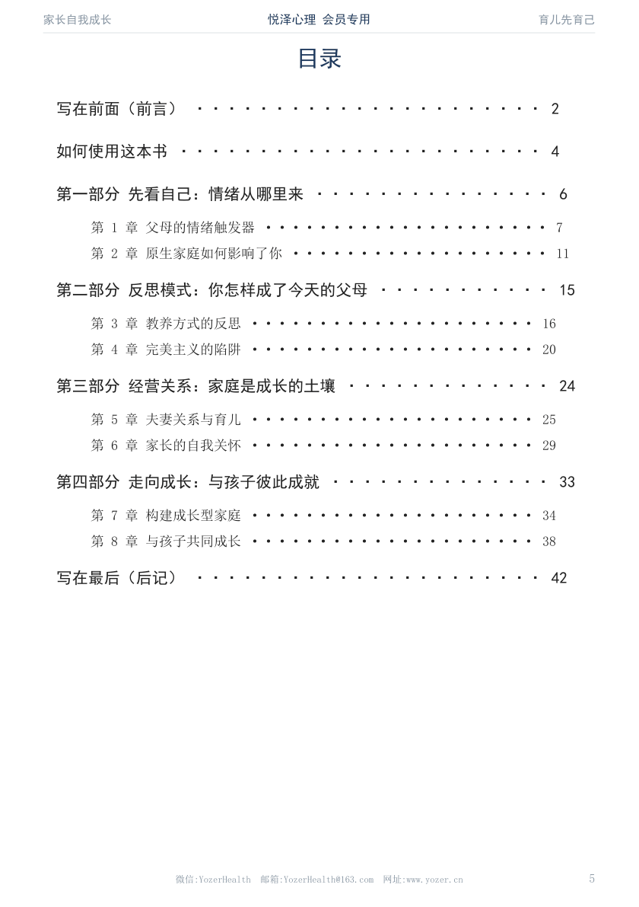
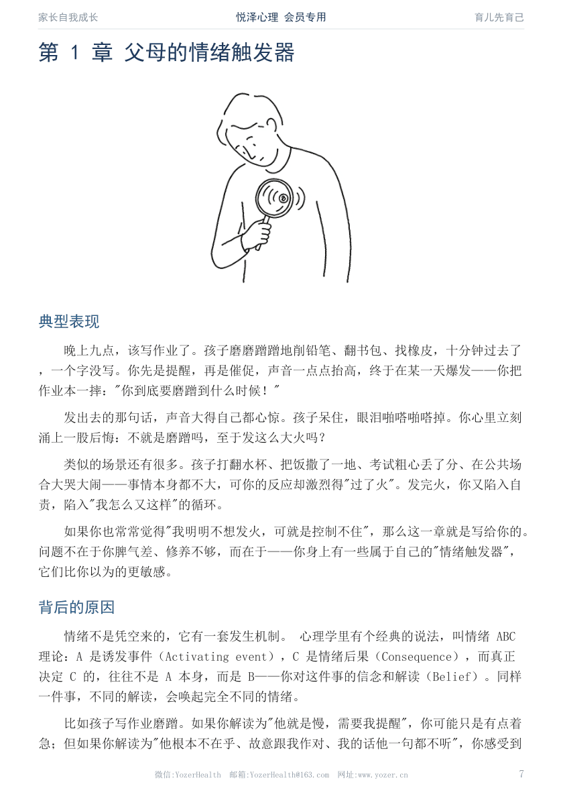
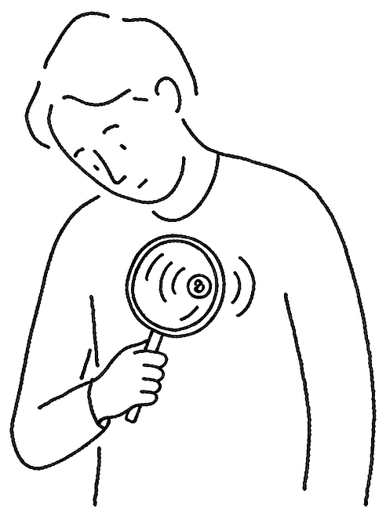

01
先看自己
2 章父母的情绪触发器、原生家庭如何影响了你——先看清情绪从哪里来。
写给父母的自我觉察与成长指南
很多育儿困境，表面上看是孩子的问题，根子却在家长自己身上。这本书不教你"怎么管孩子"，它陪你看清"你自己"——从情绪触发器、原生家庭、教养方式到完美主义、夫妻关系、自我关怀，用八章帮你完成一次自我觉察。当你开始成长，孩子会跟着你一起长。

封面与内页样张来自电子书原稿
翻开这本书之前，先听听作者想说什么
一位妈妈在咨询室里说了一件小事。
那天晚饭，孩子把一碗汤打翻在刚擦干净的桌上。她几乎是本能地吼了一声："你怎么这么不小心！"声音大得连自己都吓了一跳。孩子愣住了，眼泪一下子涌出来。就在那一刻，她突然在孩子惊恐的眼睛里，看见了小时候的自己——那个因为打碎一只碗、就躲在墙角发抖的小女孩。
"我发誓长大后绝不这样对我的孩子，"她说，"可我刚才的样子，跟我妈一模一样。"
这句话，是这本书的起点。
很多育儿困境，表面上看是孩子的问题，根子却在家长自己身上。我们冲孩子发火，常常不是因为孩子真的犯了多大的错，而是这件事恰好戳中了我们心里某个早就存在的按钮；我们逼孩子优秀，有时是在补偿自己当年的遗憾；我们在教养方式上左右摇摆，往往是因为从来没有想过——我们究竟想成为什么样的父母。
"育儿先育己"这句话，如今被说得很响，却也容易被误读。它不是说当父母就必须完美、必须先把"自己"修炼好了才配生养孩子；更不是说孩子出了问题，统统是家长的错。它说的是一个朴素的规律：父母是什么状态，孩子就处在什么样的环境里。你的情绪、你的关系、你对自己的态度，构成了孩子每天呼吸的空气。想改变空气，先要从自己这扇窗开始。
这本书不教你"怎么管孩子"，它陪你看清"你自己"。全书八章，从父母的情绪触发器讲起，依次走进原生家庭、教养方式、完美主义、夫妻关系、自我关怀，最后落到成长型家庭与亲子共同成长。每一章都遵循同一条路径：从你熟悉的生活场景切入，讲清背后的心理机制，给出可以照着做的建议，再邀你完成一次自我觉察。
开始之前，有三件事想先说清楚。
第一，觉察不是自责。读书的过程中，你可能会一次次认出自己的"问题"，甚至生出愧疚："原来我做得这么糟。"请停下这种念头。觉察的意义，是看清而不是定罪。看见自己为什么那样反应，是为了让自己多一点选择，而不是为了证明"我是个坏父母"。你已经足够努力了——此刻翻这本书的你，本身就在努力。
第二，改变是可能的，但通常缓慢。大脑和习惯具有可塑性，这是被大量研究证实的。但"可塑"不等于"速成"。你可能会反复——知道不该吼，还是吼了；决定要改，过几天又回到老样子。这不是失败，这是改变的正常节奏。每多一次觉察、每缩短一次失控的时间，都是真实的进步。请对自己有耐心，就像你希望孩子对你有耐心那样。
第三，这本书不能替代专业的心理帮助。书里讲的是普遍规律和自我成长的方法，适用于日常困扰。如果你正经历持续两周以上的情绪低落、强烈的焦虑、失眠、无法控制地伤害自己或孩子的念头，或者你的家庭正处在剧烈的冲突与危机中——请立即寻求心理咨询师、精神科医生或其他专业机构的帮助。照顾好自己，有时候意味着承认"我需要别人帮一把"，而这正是勇敢的表现。书中凡涉及此类情况，都会明确标注。
还要说明：书中所有人物与故事均为虚构，是多种真实情形的综合，请勿对号入座。书里会用到"触发器""依恋""成长型思维"这些词，它们是帮助你理解自己的工具，不是给你贴的标签。
最后，想把一句话送给你，它是全书的核心——
当你开始成长，孩子会跟着你一起长。你不需要成为一个完美的父母，只需要成为一个愿意觉察、愿意改变的父母。这份意愿，就是你给孩子最好的礼物。
愿这本小书，成为你向内看时的一束光。
按“看见自己—反思模式—经营关系—走向成长”四部分编排，层层深入
父母的情绪触发器、原生家庭如何影响了你——先看清情绪从哪里来。
教养方式的反思、完美主义的陷阱——看看你怎样成了今天的父母。
夫妻关系与育儿、家长的自我关怀——家庭是孩子成长的土壤。
构建成长型家庭、与孩子共同成长——与孩子彼此成就。
统一的章节结构，先讲清为什么，再给出可以照着做的具体方法
从你熟悉的生活场景切入，让你觉得"这说的就是我"
用心理学讲清根源，不焦虑、不贴标签
每条配实例情景，含错误示范与正确示范
动手完成一张清单，方法在你写下的字里
点破常见误区，避免越想改越糟
从专业角度收束，讲清原理与边界
8 章 · 附真实页码 · 点击上方按钮可快速跳转试读
以下为第 1 章节选，体验"原理 + 建议 + 正误示范 + 觉察练习"的编排
晚上九点，该写作业了。孩子磨磨蹭蹭地削铅笔、翻书包、找橡皮，十分钟过去了，一个字没写。你先是提醒，再是催促，声音一点点抬高，终于在某一天爆发——你把作业本一摔："你到底要磨蹭到什么时候！"
话一出口，声音大得自己都心惊。孩子呆住，眼泪啪嗒啪嗒掉。你心里立刻涌上一股后悔：不就是磨蹭吗，至于发这么大火吗？
类似的场景还有很多。孩子打翻水杯、把饭撒了一地、考试粗心丢了分、在公共场合大哭大闹——事情本身都不大，可你的反应却激烈得"过了火"。发完火，你又陷入自责，陷入"我怎么又这样"的循环。
如果你也常常觉得"我明明不想发火，可就是控制不住"，那么这一章就是写给你的。问题不在于你脾气差、修养不够，而在于——你身上有一些属于自己的"情绪触发器"，它们比你以为的更敏感。
情绪不是凭空来的，它有一套发生机制。心理学里有个经典的说法，叫情绪 ABC 理论：A 是诱发事件（Activating event），C 是情绪后果（Consequence），而真正决定 C 的，往往不是 A 本身，而是 B——你对这件事的信念和解读（Belief）。同样一件事，不同的解读，会唤起完全不同的情绪。
比如孩子写作业磨蹭。如果你解读为"他就是慢，需要我提醒"，你可能只是有点着急；但如果你解读为"他根本不在乎、故意跟我作对、我的话他一句都不听"，你感受到的就不只是着急，而是愤怒、委屈，甚至被否定的羞辱。让你炸的，从来不是磨蹭本身，而是磨蹭背后那句你自动冒出来的解读。
触发器往往是"旧伤"，不是"新账"。为什么有些事能让你瞬间暴怒，而同样的事发生在别人家孩子身上，你却很平静？因为这件事恰好戳中了你心里一个早就存在的按钮。这个按钮，可能来自你从小被反复要求"快一点、快一点"的紧张体验，可能来自你曾经因为慢而被批评、被嘲笑的记忆，也可能来自你此刻正承受的压力——工作不顺、睡眠不足、夫妻冷战，都会让这个按钮变得更敏感。孩子只是碰巧按到了它。
情绪本身不是敌人，它是信号。愤怒可能在提醒你"我的界限被侵犯了"，焦虑可能在提醒你"有件事我很在意、怕做不好"，委屈可能在提醒你"我的付出没被看见"。情绪没有对错，它只是告诉你：心里有件事需要被关注。真正需要管理的，不是"不许有情绪"，而是"如何表达情绪、不被情绪劫持"。
建议一：抓住"暴怒时刻"，制作你的触发器清单。
改变从觉察开始，而觉察需要一个具体的抓手。请回想最近三次你对孩子发火的场景，把那一刻记录下来：发生了什么事？你脑子里冒出的第一句话是什么？你当时身体的感觉怎样（心跳加快、胸口发紧、脸发热）？你的情绪是愤怒、委屈，还是焦虑？
连续记录一两周，你往往会发现规律：真正让你失控的，就那么几个反复出现的主题——可能是"不被尊重"，可能是"失控"，可能是"我的付出被无视"。看清这些主题，你就从"我就是脾气差"的模糊自责，走向了"我知道什么会点燃我"的清晰觉察。
建议二：区分"事实"和"解读"，给自动冒出来的想法松绑。
当你感到火气上来的那一刻，试着在心里问自己一句："我看到的事实是什么？我脑子里冒出来的解读又是什么？"事实是客观发生的，解读是你加上去的。
"孩子作业本上错了五道题"是事实；"他根本没认真、态度有问题"是解读。"孩子进门没跟我打招呼"是事实；"他眼里根本没有我"是解读。把事实和解读分开，你会发现，很多怒气来自那个未必成立的解读。这不是要你强迫自己"往好处想"，而是提醒自己：我此刻的解读，只是众多可能的解释之一，未必是真相。
建议三：在反应之前，按一个"暂停键"。
打个比方：情绪反应往往比冷静思考快一步。情绪上来时，人会在几秒钟内进入"自动驾驶"，还没来得及想清楚，话就已经说出了口。所以关键不是在发火后懊悔，而是在那几秒里插入一个"暂停"：感觉火气升起时，先闭嘴，做三次缓慢的深呼吸（吸气四秒、呼气六秒），或者干脆说一句"我需要冷静一下，等会儿再说"，暂时离开现场。
这个暂停不是逃避，而是给理智脑争取上线的时间。几秒钟的停顿，往往就能把一场爆发变成一次对话。发火之后，也别忘了"修复"——承认自己刚才声音太大了，跟孩子说一句"对不起，妈妈刚才太着急了"。修复不会让你失去威信，反而会教给孩子一件重要的事：大人也会犯错，犯了错可以道歉。
请找一个安静的时刻，完成这张"情绪触发器清单"。不用担心写得完不完整，真实就好。
最近三次我对孩子发火，分别是因为什么事？（写具体场景）
那一刻，我脑子里冒出的第一句话是什么？（"他怎么又……""他根本……"）
那种感受，我小时候有过吗？当时是谁让我有这种感觉？
除了孩子的事，我当下是否还承受着别的压力（工作、睡眠、关系）？
我身体最早发出"要发火"的信号是什么？（心跳、攥拳、发紧、声音变尖……）
写完以后，看看第 2 题和第 3 题之间，有没有隐隐的联系。那可能就是你最重要的那个按钮。
把情绪当敌人，一味压抑。越压越容易在某刻猛烈反弹。情绪需要被看见和恰当表达，不是被憋回去。
用"我是为你好"给发泄披上外衣。吼叫就是吼叫，再好的动机也不能让伤害消失。别用动机为方式开脱。
只在发火后自责，从不事前觉察。自责如果不通向行动，就只是内耗。把力气用在记录、觉察和练习暂停上。
发完火假装没发生。不修复，孩子学到的就是"强者发了火不需要道歉"。一次道歉，胜过无数次回避。
期待"从此再也不发火"。这几乎不可能。目标不是零发火，而是发得更少、时间更短、伤害更小、修复更快。
情绪管理从来不是"做个从不发火的好脾气父母"，那是神话。真实的目标是：在刺激和反应之间，争取到那一小段可以选择的余地。心理学大量研究指出，情绪调节能力是可以训练的——觉察触发器、重新解读、插入暂停、事后修复，每一步都在拉长那段余地。
也要提醒一句：如果你发现自己长期处于易怒、失控的状态，怎么调整都收效甚微，那可能不只是"修养"问题，而与长期的压力、睡眠、甚至情绪健康有关。这时，照顾好自己的心理健康（第 6 章会详谈），或者寻求专业帮助，才是对自己和对孩子都负责的做法。你能给孩子的最好的情绪教育，不是永远不生气，而是让他看见：一个有情绪的大人，如何坦诚面对、妥善表达、及时修复。
—— 以上为节选，完整内容见电子书 ——
真实排版预览 · A5 竖版 · 黑白简笔画插图



图片为文档内嵌样张，仅作版式展示
| 项目 | 说明 |
|---|---|
| 书名 | 家长自我成长：育儿先育己 |
| 副标题 | 写给父母的自我觉察与成长指南 |
| 读者对象 | 0—18 岁孩子的家长与主要照护者 |
| 篇幅 | 8 章 · 约 2.3 万字 · 45 页 |
| 版本 | A5 版（148×210mm） |
| 格式 | PDF 电子书 |
| 插图 | 9 张黑白简笔画题图 |
| 结构 | 四部分 · 每章六步 · 自我觉察练习 |